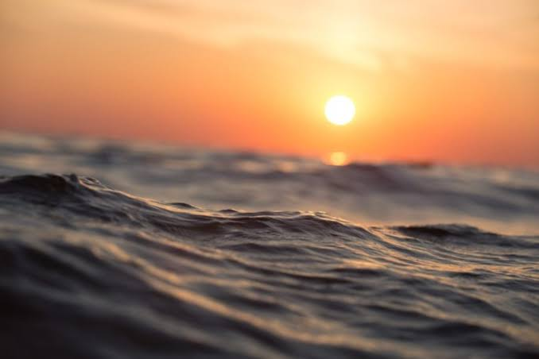

🌊 El Fenómeno El Niño
Cuando el océano cambia, todo el planeta lo siente

🔍 ¿Qué es exactamente?
El Niño es un cambio natural en el clima del mundo. Ocurre cuando las aguas del océano Pacífico se calientan mucho más de lo que deberían. Ese calor extra no se queda quieto: viaja por el aire y cambia los vientos, las lluvias y las temperaturas en casi todos los continentes.
Su nombre apareció hace más de cien años. Pescadores de Perú y Ecuador notaban que el mar se calentaba cerca de diciembre, en época de Navidad, y por eso lo llamaron "El Niño", en referencia al Niño Jesús. Desde entonces, los científicos lo estudian para entenderlo mejor y avisar con tiempo.
🌬️ ¿Cómo funciona?
En tiempos normales, los vientos soplan desde América hacia Asia. Empujan el agua caliente hacia el oeste y el agua fría sube desde el fondo del mar por el este. Eso mantiene todo en equilibrio.
Pero durante El Niño, esos vientos se debilitan. El agua caliente regresa hacia América y cubre la superficie del mar. Como el mar calienta el aire, todo cambia:
- Las zonas que siempre llovía mucho pueden volverse secas
- Zonas secas reciben lluvias muy fuertes que antes no tenían
- Las temperaturas suben en gran parte del planeta
- Los ciclos de lluvia se vuelven difíciles de predecir
El fenómeno puede durar desde unos pocos meses hasta más de un año. Aparece cada 3 a 7 años aproximadamente.
📊 No es lo mismo siempre
Hay El Niño fuerte, moderado y débil. No todos afectan igual. Pero cuando es fuerte, los efectos se sienten en la agricultura, el agua, la salud y la economía de muchos países. Por eso los científicos vigilan el mar todo el tiempo: medir la temperatura del agua les ayuda a saber si se acerca y a avisar a las comunidades.
🌍 ¿Le pasa algo malo a la naturaleza?
Sí. El calentamiento del mar daña los corales, que son el hogar de muchos peces. Los animales que viven en zonas frías sufren con temperaturas más altas. Los bosques secos se vuelven más propensos a incendios. Todo esto nos recuerda que el planeta tiene un equilibrio delicado y que debemos cuidarlo.
El Niño no lo causamos nosotros: es natural. Pero el calentamiento que las personas provocamos puede hacer que sus efectos sean más graves. Por eso cuidar el planeta ayuda también a que estos fenómenos no sean tan dañinos.